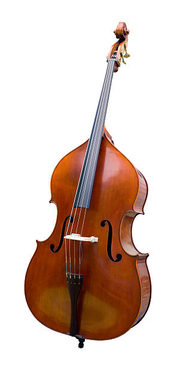
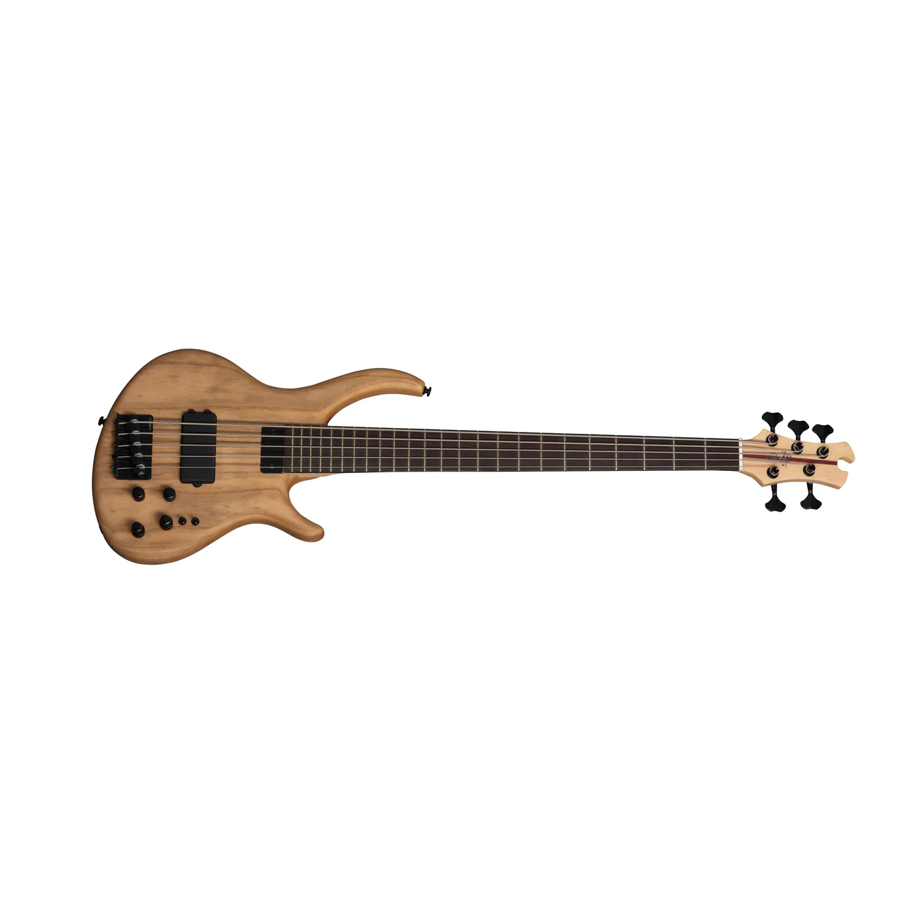

The acoustic bass and electric bass are both low-pitched string instruments that provide foundational bass lines in music. They differ in construction, sound production, and usage. The acoustic bass produces deep, natural tones through its hollow body, making it ideal for unplugged and acoustic performances. The electric bass, on the other hand, uses pickups and an amplifier to deliver louder, more precise sound with flexible tone controls. While the acoustic bass emphasizes warmth and resonance, the electric bass offers greater volume, sustain, and versatility across modern music styles.
The acoustic bass is larger than an electric bass and produces a deep rich low tone without the need of an amplifier. With a hollow body and longer neck, the acoustic bass offers both power and resonance, making it a great choice for folk, jazz, and unplugged performances, providing a warm, natural bass sound that blends well with other instruments.

The electric bass guitar is a solid-body, electrically amplified instruments designed to produce low frequency notes using magnetic pickups and an amplifier. It typically has four strings and delivers a strong consistent bass tone with precise intonation and sustain because it has frets. The sound on the electric bass can be shaped using tones controls, EQ, and effects, making high versatile for many music genres such as rock, funk, hip-hop, blues, and others.
